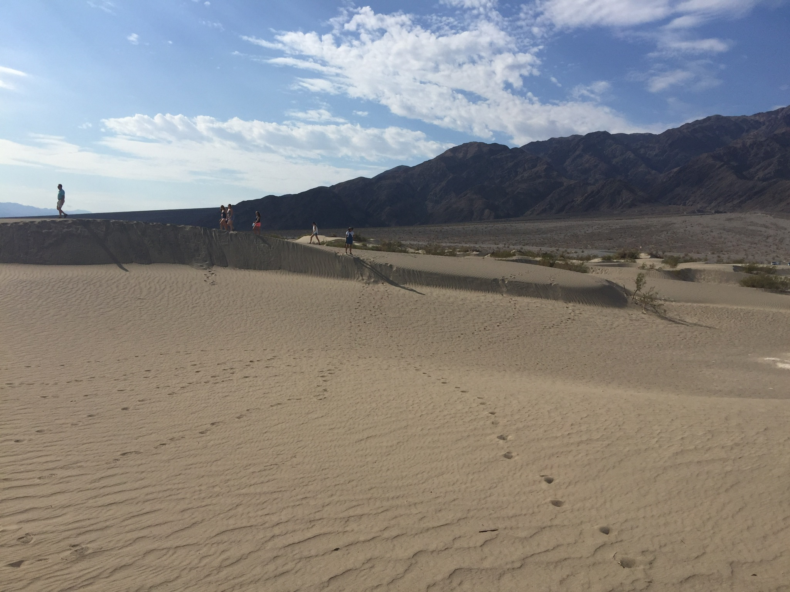
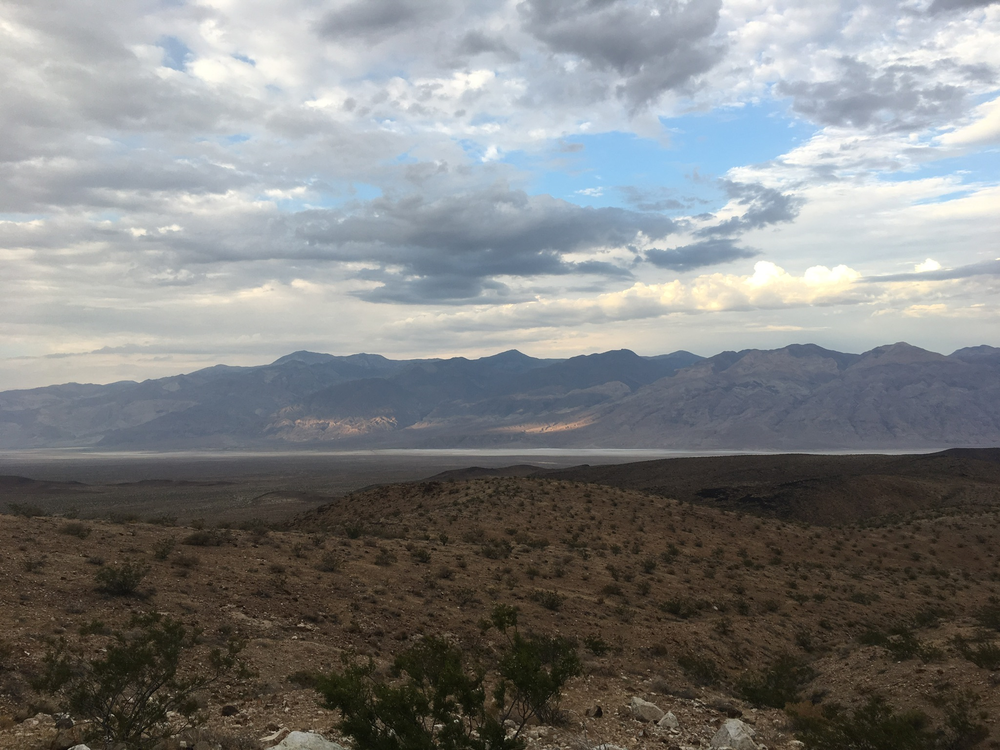
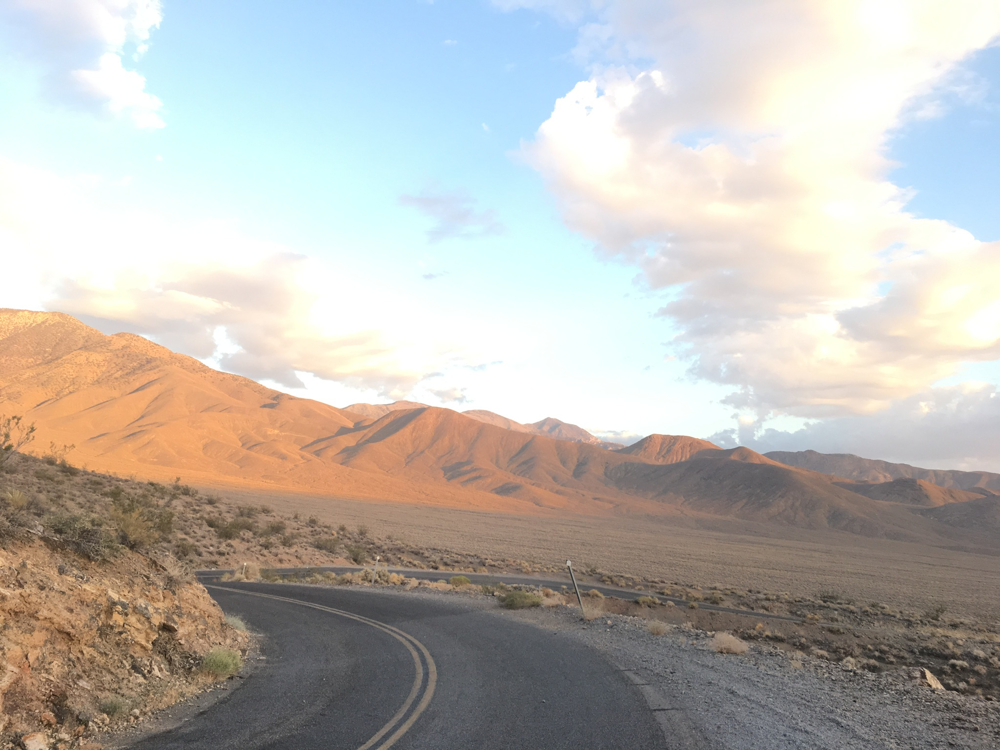
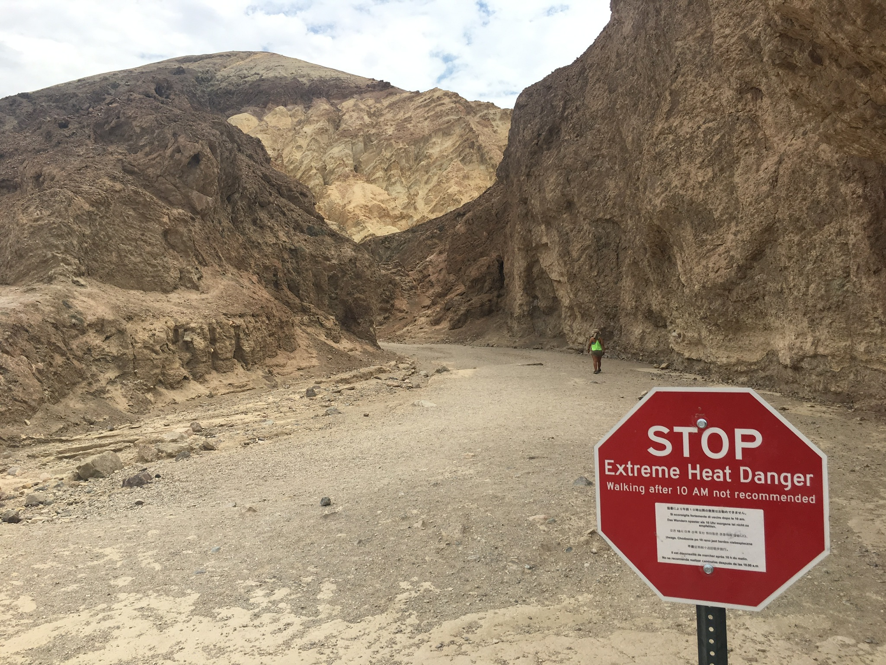
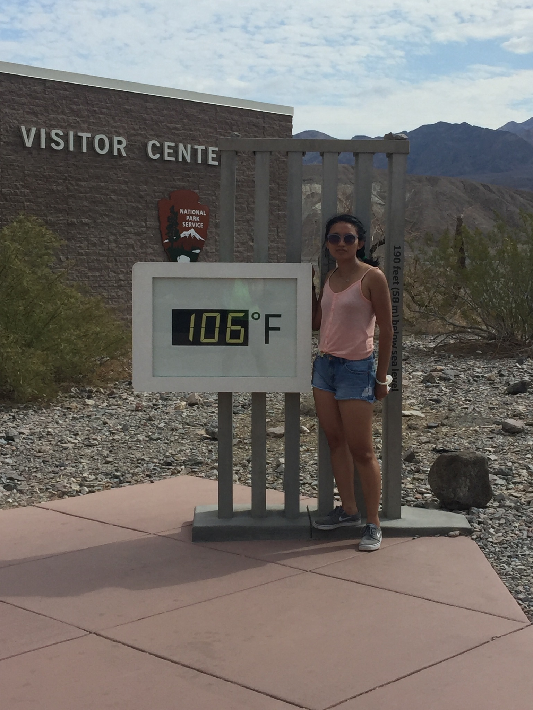
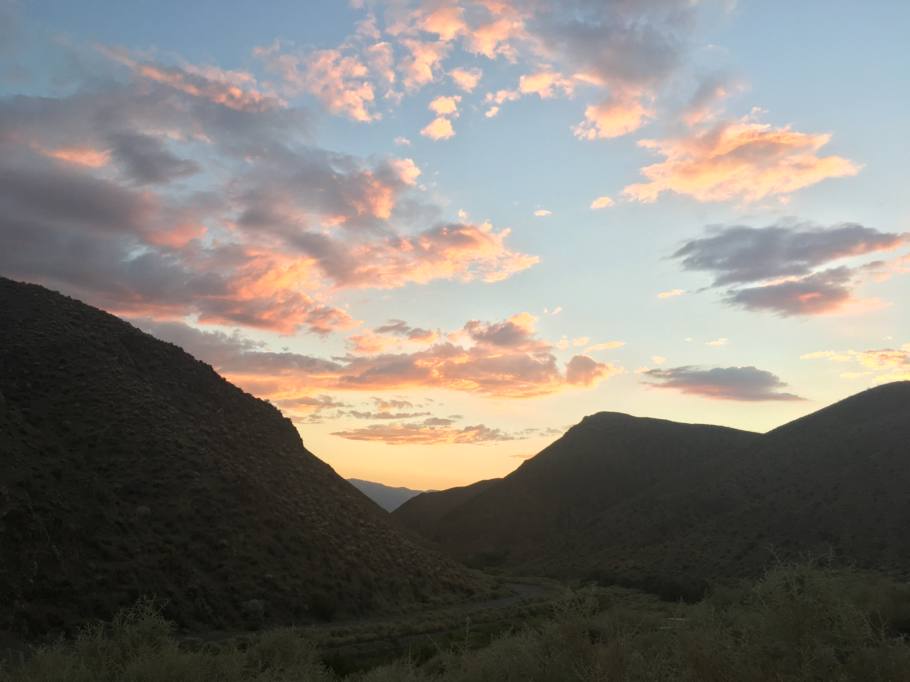
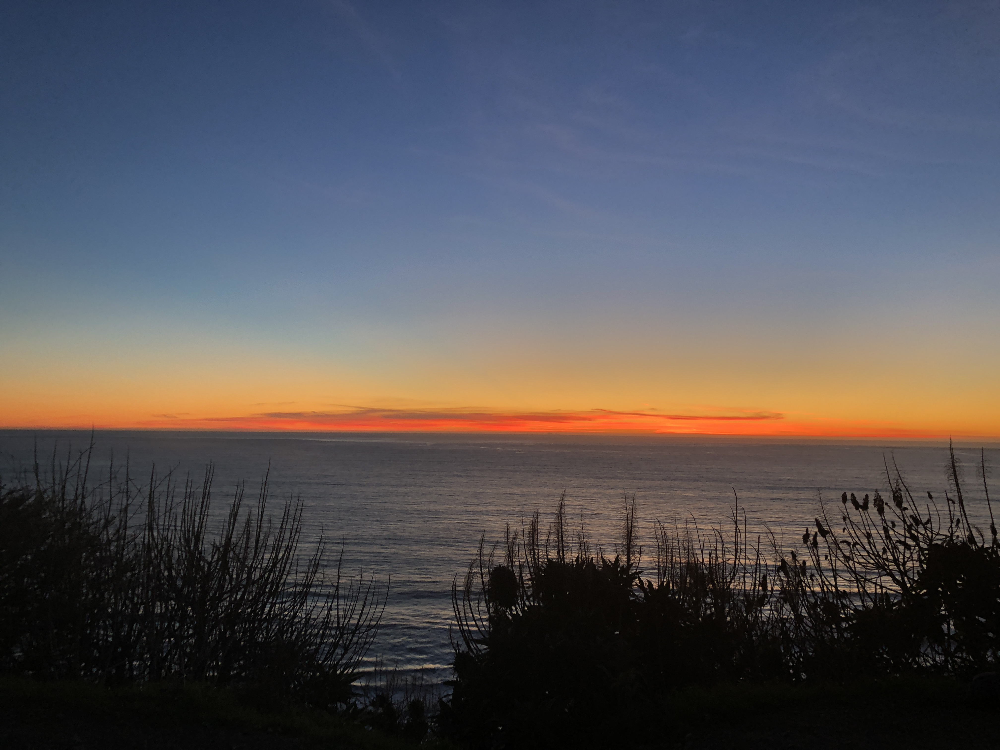
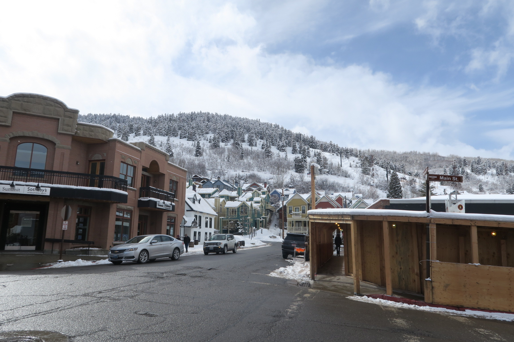
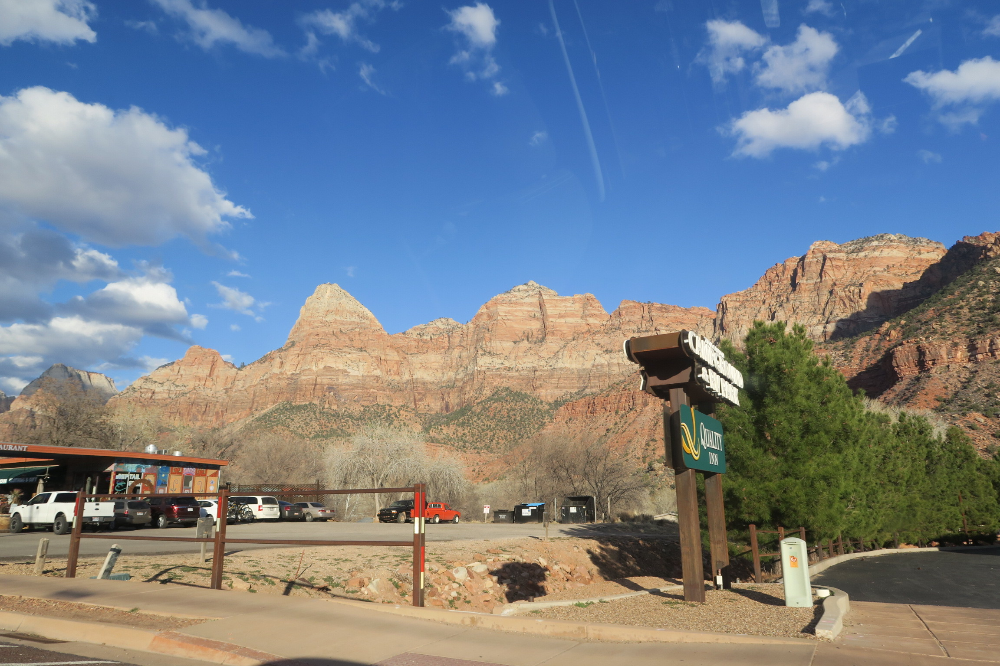

This is one of the most beautiful Lake.I was there around first week of May and it was all covered with snow.It is one of the deepest lake in the United States with depth of 1943feet.
 This is beautiful sanddunes picture from Death Valley National park.It is one of the most beautiful park in the United States. It is hottest,driest and lowest of all the national parks in United States.
  I visited this park two years back during the end of June and the temperature was at its peak.Temperature was 104 plus.It was hard to get out of car and walk up to the viewpoint. Drive through out the park was very scenic.But i would never go there during june, July.
 I enjoy watching sunset and these are one of the beautiful sunset views i have experienced near bay area,San francisco, CA.
 
Beautiful Utah